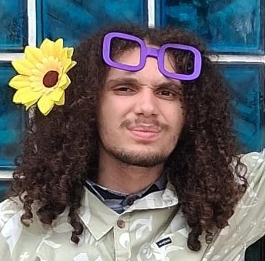
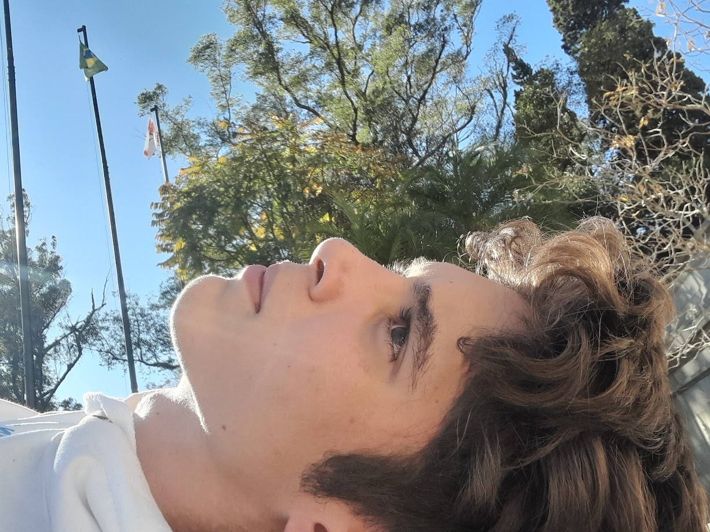

Quem somos?
Somos alunos do curso de Desenvolvimento de Sistemas da Etec Ilza Nascimento Pintus.

CAIO RODRIGO

RAFAEL TOBIAS
Projetos


O primeiro projeto das aulas de PAM foi o desenvolvimento de um aplicativo modelo portifólio, onde deveriamos colocar nossas habilidades técnicas e comportamentais.


O segunda projeto envolveu o desinvolvimento de um aplicativo baseado em um layout com as skills de um personagem de RPG da forma que desejássemos.


O terceiro projeto realizado nas aulas de PAM envolveu a realização de uma aplicação com dois botões (Touchableopacity), que deveriam exibir duas mensagens distintas quando pressionados.

O quarto projeto realizado tinha como objetivo implementar um aplicativo em Espo React que exibisse um menu contendo botões para exibir oito filmes que deveriam estar em cartaz. Após o botão ser selecionado deveriam aparecer em outra tela mostrando uma imagem do filme e um texto informativo sobre.